We will use curvy uppercase (\(\mathcal{M,G,V,E}\)) script for sets across all the models, \(\mathbf{BOLD}\) uppercase for sets, and \(UPPER\) case standard for instances in the models. Lowercase like \(v\) will be reserved for imagining actual values (so a node taking on a particular value).
The models are indexed as \(\mathcal{M}=\{M_1,M_2,\dots,M_8 \}\) with their corresponding graphical form as \(\mathcal{G}=\{G_1,G_2,\dots,G_8 \}\), and each graphical model \(G_k\) comprises of a set of vertices \(\mathbf{V}_{G_k}\) and edges \(\mathbf{E}_{G_k}\), so \(G_k=(\mathbf{V}_{G_k}, \mathbf{E}_{G_k})\), with the set of all nodes being \(\mathcal{V}\) edges being \(\mathcal{E}\). \(E_{ij}=V_i \rightarrow V_j\) indicates an edge between two nodes. If two nodes are connected through a mediated path, such as \(V_i \rightarrow \dots \rightarrow V_j\) then we write \(\mathrm{De}_{ij}=V_i \rightsquigarrow V_j\) or \(V_i \in \mathrm{an}(V_j)\). To specify model context for ancestors, descendants and mediated parts we subscript the model: \(V_i \in \mathrm{an}_{G_k}(V_j)\) or \(V_i \rightsquigarrow _{G_k} V_j\). Nodes \(V_i\) are indexed over all models (so across \(\mathcal{V}\)), but if we want to talk about \(V_i\) as it stands in \(G_k\) we would use \(V_{i:G_k}\), and likewise for an edge \(E_{ij:G_k}\) residing in the context of model \(G_k\).
We will also be applying coarsening functions to create cluster DAGs. A typical coarsening functions \(\varphi\) is applied to the graph, and within it all the nodes and edges. So \(\varphi (G_{k})=\varphi G_{k}=(\mathbf{V}_{\varphi G_k},\mathbf{E}_{\varphi G_k})\), which will also refer to as a new cluster model \(G^C_{k}=\varphi G_k\) for slightly cleaner notation, and including the \(C\) for cluster. The coarsening function \(\varphi\) induces an equivalence relation \(\sim _\varphi\) on \(\mathbf{V}_{G_k}\) where \(V_i \sim_\varphi V_j\) iff \(\varphi (V_i) = \varphi (V_j)\), i.e. both nodes map to the same cluster. In this cluster model we would find \(\mathbf{V}_{\varphi G_k}\). The coarsened / cluster nodes would be \([V_{i}]_{\varphi}=\{V_j \in \mathcal{V}:V_j \sim_{\varphi} V_i\}\), the equivalence class of nodes \([V_i]_{\varphi}\), or simply \([V_i]\) if \(\varphi\) is clear from the context. These clusters can be relabled and reindexed to \(C_a = [V_i]_{\varphi}\) for legibility. The edges in \(\varphi G_{k}=G_{k}^{C}\) are then \(E^{\varphi}_{[i][j]}=[V_i]\rightarrow [V_j]=C_a \rightarrow C_b=E^{C}_{ab}\). Choosing to use the \(C\) or \(\varphi\) syntax depends on the context - are we mainly discussing the cluster model \(G_k^C\) or the processes of coarsening \(\varphi G_{k}\)? There is also the causal degradation produced by \(\varphi\), which we denote as \(\mathrm{deg}_\varphi\) generally, \(\mathrm{deg}_\varphi({G_k})\) as applied to a particular model, and \(\mathcal{L}_i{\text{-}}\mathrm{deg}_\varphi(G_k)\) to specify a particular level of the causal hierarchy, \(\mathcal{L}_i:i\in \{1,2,3\}\).
A measure of causal consistency is also computed, but this is between two models, rather than under the process of a clustering. So
Notation for adjustment sets? Things like that?
Data import
Code
# imports all causal models as DAGitty objects# They are names dag_s1, ..., dag_s8 corresponding to the eight sessions# A table of session data is also includedsource("load-GCMs.R")
Modelling sessions were originally run on Loopy, then transcribed into DAGitty (online) to generate the following dot language syntax for importing into R. A better way of doing this is under development.
Data imported as DAGitty objects, but need to be in tidygraph format for many calculations and visualisations.
Coding the nodes into rough groups. There are two levels:
node_group is the first aggregation into slightly coarser groups of nodes.
node_type is an even more coarse grouping into a handful of types.
Also some nicer names of the fields: - node_nice_name is a longer more explanatory name for plotting and putting in tables. - node_group_nice_name a longer more explanatory name for node groups, as above.
Code
name_node_nice_name <-tribble(~name, ~nice_name,"CD", "Any system data","CD.Att", "Attendance","CD.LMS", "LMS activity","CD.LMS.code", "Code artifacts","CD.LMS.write", "Writing artifacts", "CD.Str", "Course Data","Grade", "Assessment grade","Grade.Coms", "Mark - Communication","Grade.Exam", "Mark - Exam","Grade.Interp", "Mark - Interpretation","Grade.Proc", "Mark - Learning process","Grade.Quiz", "Mark - Quiz","Grade.Ref", "Mark - Learning reflection","Grade.Tech", "Mark - Technical","H", "Help (general)","H.AI", "Help from AI (any)","H.AI.Agent", "Help from AI (agent)","H.AI.evil", "Misuse of AI","H.AI.evil.code", "Misuse of AI (code)","H.AI.evil.write", "Misuse from AI (write)","H.AI.Fb", "Help from AI (feedback)","H.AI.good", "Help from AI (to learn)","H.AI.Res", "Help from AI (research)","H.AI.Study", "Help from AI (revision)","H.Ment", "Help from mentor","H.other.evil", "Cheating - non-AI","H.Peer", "Help from peers","H.Tut", "Help from teacher / tutor","H.Tut.Fb", "Feedback from teacher / tutor","LD", "Learning design","LD.Other", "Other learning design","LD.AIguide", "Guidance on AI use","LD.Task", "Task design","LD.Task.Code", "Coding task design","LD.Task.Grp", "Groupwork task design","LD.Task.Other", "Other task design","LD.Task.Prac", "Practical task design","LD.Task.Write", "Writing task design","S.Act", "Student decisions / actions","S.Act.AIstrat", "Student AI strategy","S.Act.Fb", "Student acts on feedback","S.Act.Fb.Post", "Student acts on feedback between subjects","S.Act.Frm", "Student does formative tasks","S.Act.Perf", "Student performance on task","S.Act.Time", "Student commits time","S.Aff.Integ", "Student acting with integrity","S.Aff.Joy", "Student enjoyment","S.Aff.MindSet", "Student mindset","S.Aff.Safe", "Student feels safe","S.Aff.WrkLd", "Student workload pressure","S.Cp.WrkLd", "Student workload pressure","S.Aff.Hsk", "Student help seeker","S.Att.Eq", "Student equity group","S.Cp.Hsk", "Student help seeker","S.Att.Nro", "Student neuro-divergent","S.Att.SocCap", "Student social capital","S.Kn.Aca", "Student academic skill","S.Cp.Aca", "Student academic skill","S.Cp.Aca.Post", "Student academic skill: Post grade","S.Cp.EvJdg", "Student evaluative judgement","S.Cp.Fb", "Student feedback literacy","S.Cp.Grp", "Student groupwork capability","S.Cp.Ind", "Student individual work capability","S.Cp.Lrn", "Student metacognative learning capabilities","S.Cp.SRL", "Student SRL","S.Kn", "Student subject knowledge","S.Kn.Post", "Student subject knowledge: Post grade","S.Kn.Coms", "Student communications knowledge","S.Kn.Interp", "Student interpretation knowledge","S.Kn.Prior", "Student prior knowledge","S.Kn.Tech", "Student technical knowledge","T.Act.UseAI", "Teacher use of AI","T.Aff.Integ", "Teacher acts with integrity","T.Aff.WrkLd", "Teacher workload pressure","T.Cp.WrkLd", "Teacher workload pressure","T.Cp.Inst", "Teacher instruction quality","T.Cp.KnStu", "Teacher knows students","T.Cp.Mark", "Teacher reliably marks","T.Kn.AI", "Teacher AI literacy","T.Cp.AI", "Teacher AI expertise","T.Kn.Ass", "Teacher assessment literacy","T.Kn.Sub", "Teacher subject knowledge","T.Cp.Sub", "Teacher subject expertise")node_group_nice_name <-tribble(~node_group, ~nice_name,"Assessments", "Preliminary assessments", "CD.Att", "Student attendance","CD.LMS", "LMS activity","CD.Str", "Course Data","Grade", "Assessment grade","H.AI.evil", "Misuse of AI","H.AI.good", "Help from AI","H.Cheat", "Cheating - non-AI","H.Peer", "Help from peers","H.Gen", "Help (General)","H.Tut", "Help from teacher / tutor","LD.Gen", "Learning design","LD.Task", "Task design","S.Act", "Student decisions / actions","S.Att", "Student attributes","S.Cp", "Student metacognitive skill","S.EM", "Student emotion / motivation","S.Kn", "Student knowledge","S.Kn.Prior", "Student prior knowledge",# "T.Act", "Teacher use of AI","T.Cp", "Teacher capabilities", "T.EM", "Teacher emotion / motivation","T.Kn", "Teacher knowledge")
Coding node groups
This process involved iterating between:
Examining the transcript, the node description (label in the diagram), and forming an initial classification of the node. A natural place for a node-group to form was where in one model a node was broken into sub-components, where in others it was kept whole. Student knowledge was a key example of this, where several models split this into finer grained nodes, where others did not.
After this the graph coarsening according to the map \(\varphi(V_i)=\mathrm{nodegroup}(V_i)\), calculating the \(\mathcal{L}_1\) and \(\mathcal{L}_2\) cost of clustering the nodes into their node groups. From this two operations were performed on the cluster graph: (a) identifying which node clusters had contributed most to the degradation of the causal consistency, and (b) parts of the cluster graph that could potentially be coarsened further.
Nodes and node groups were then then re-evaluated, based on which clusters of nodes caused the most degradation of causal consistency when coarsening the graphs. Often this amounted to reasonable re-interpretations of the transcript and the graph, such as distinguishing between aspects of student knowledge that were present prior to the period of study, and those aspects of student knowledge that were changing during the study. Step 2 was then repeated and the re-evaluation continued.
Code
code_node_group <-function(v) {case_when(# Course data - Str, LMS -------------- v =="CD"~"CD.Str", # was blending LMS and Str, but original graph was more about structurestr_detect(v, "CD\\.LMS") ~"CD.LMS", v =="CD.Att"~"CD.Att", # Attendance data v =="CD.Str"~"CD.Str",# Grade data -------------------------- v =="Grade"~"Grade",str_detect(v, "Grade\\.") ~"Grade", # Assessments# Kinds of help / assistance -----------------------# - Help from teacher or tutor# - - H.Gen(eral) for the broad H category v =="H"~"H.Gen", # This should actually be the node_type...somehow v =="H.Tut"~"H.Tut", v =="H.Ment"~"H.Tut", v =="H.Tut.Fb"~"H.Tut",# - Help from peers - collapsing with Tut for "help from people" - change from first coding v =="H.Peer"~"H.Tut",# - Help from AI (good or bad usage)str_detect(v, "H\\.AI\\.evil") ~"H.AI.evil",str_detect(v, "H\\.AI") ~"H.AI.good",# - Other nefarious help (i.e. cheating) v =="H.other.evil"~"H.Cheat",# Learning Design --------------------str_detect(v, "^LD\\.Task") ~"LD.Task",str_detect(v, "^LD") ~"LD.Gen",# Student nodes ---------------------------------# - Student activity / decisions # - - Action post grade a seperate node v =="S.Act.Fb.Post"~"S.Act.Post", v =="S.Cp.Aca.Post"~"S.Cp.Post",str_detect(v, "^S\\.Act") ~"S.Act",# - Student attributes (generally unchangable) str_detect(v, "^S\\.Att") ~"S.Att",# - Student metacognitive capability (metacognition) / capacity / workloadstr_detect(v, "^S\\.Cp") ~"S.Cp",# - Student emotion / motivationstr_detect(v, "^S\\.Aff") ~"S.EM",# - Student knowledge (cognition) v =="S.Kn.Prior"~"S.Kn.Prior", v =="S.Kn.Post"~"S.Kn.Post", str_detect(v, "^S\\.Kn") ~"S.Kn",# Teacher nodes ---------------------------------# - Teacher knowledge / meta-cognition: What they bring to the tablestr_detect(v, "^T\\.Kn") ~"T.Kn",# - Teacher capabilities - usually executed during learning cyclestr_detect(v, "^T\\.Cp") ~"T.Cp",# - Teacher emotion / motivationstr_detect(v, "^T\\.Aff") ~"T.EM",TRUE~ v )}
From the node groups, describe how easy (or not) they are to measure. This is completed by someone familiar to the data warehouse at the institution:
DW - Data Warehouse: Data is already collected and stored in the data warehouse of the institution.
O - Observable: Node is not currently collected data, but would be possible to measure and collect with resourcing.
PO - Potentially Observable: Node is not measured, and would be difficult to measure directly. It is possible to find a direct proxy and measure that instead, such as a survey instrument.
L - Latent: Node is not measured and would be difficult to even find a direct proxy for the latent construct.
Functions outlined in the graph_helpers.R script. Functions starting with gcm_ should operate on either a dagitty or tidygraph object.
Graph metrics functions
Generating a range of edge metrics - comparisons across models. Want to label edges in the unified DAG as ‘contested’ if they switch direction between some models. Also want to examine the same idea for a list of descendants. This is handled as a new table of edges - including all possible edges.
This is based on the coding of the nodes into node groups.
Here we merge nodes into node groups before generating plot later. This has the potential to introduce loops depending on how the constructs were built, so we need to check the causal consistency between the fine-grained graph and the clustered / merged / higher-level graph.
Code
clean_node_group_cluster_graph <-function(cdag) {# After coarsening with code_node_group cleans up some of the # names and nodes cdag |>activate(nodes) |>mutate(node_type =code_node_type(name)) |>select(-any_of(c("nice_name", "node_group"))) |>left_join( node_group_nice_name |>rename(name = node_group),by ="name") }node_group_cluster_graph_from_merged <-gcm_cluster_graph(merged_all_graph, code_node_group) |>clean_node_group_cluster_graph()tcdags_node_group <-map(tdags, \(g)gcm_cluster_graph(g, code_node_group) |>clean_node_group_cluster_graph()) node_group_cluster_graph_from_clusters <-gcm_merge(gcm_merge(gcm_merge(tcdags_node_group[[1]], tcdags_node_group[[2]]),gcm_merge(tcdags_node_group[[3]], tcdags_node_group[[4]]) ),gcm_merge(gcm_merge(tcdags_node_group[[5]], tcdags_node_group[[6]]),gcm_merge(tcdags_node_group[[7]], tcdags_node_group[[8]]) ) )
gcm_metrics <-inner_join(session_data, dag_complexity_metrics, by ="Model")
Visualisations
Idea on layouts of graphs
Sunflower layout: Each node group placed in \(\phi\) ratio spiral out from centre, and each sub node spiraling out from these. A good order for this would be in temporal (roughly) of the node types: Learning design, Teacher, Student, Help, Learning data, Assessment data.
# Generating allp_fine_show_and_save <-function(n){ p_temp <-plot_highlighted_fine_graph(n, LEGEND_POSITION ="right") +ggtitle(paste0("Model ", n, " highlighted"))ggsave(plot = p_temp, filename =paste0("figures/plt--merged-fine-with-", n, "-highlighted.png"),width =8, height =5, dpi =600)return(p_temp)}p_coarse_show_and_save <-function(n){ p_temp <-plot_highlighted_coarse_graph(n, LEGEND_POSITION ="right") +ggtitle(paste0("Coarsened model ", n, " highlighted"))ggsave(plot = p_temp, filename =paste0("figures/plt--merged-coarse-with-", n, "-highlighted.png"),width =8, height =5, dpi =600)return(p_temp)}
Highlighting all models in turn
Code
p_fine_show_and_save(1)
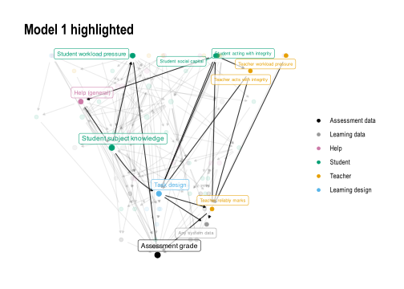
Code
p_fine_show_and_save(2)
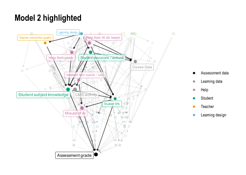
Code
p_fine_show_and_save(3)
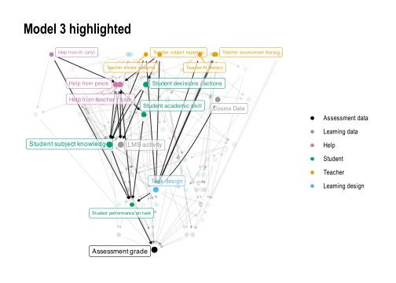
Code
p_fine_show_and_save(4)
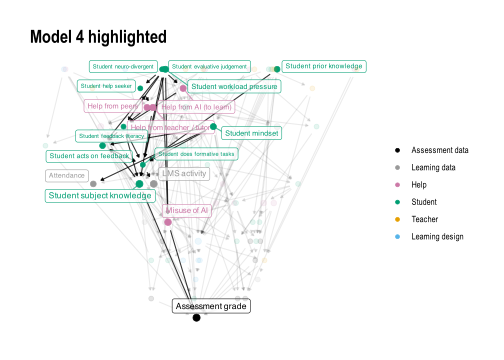
Code
p_fine_show_and_save(5)
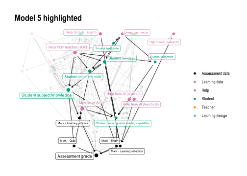
Code
p_fine_show_and_save(6)
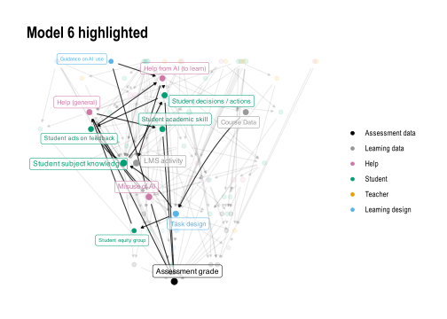
Code
p_fine_show_and_save(7)
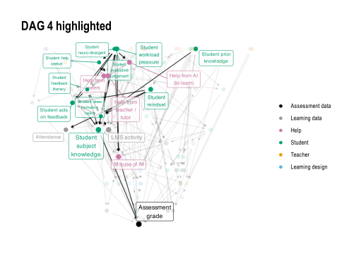
Code
p_fine_show_and_save(8)
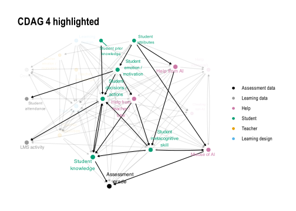
Highlighting all coarsened models in turn
Code
p_coarse_show_and_save(1)
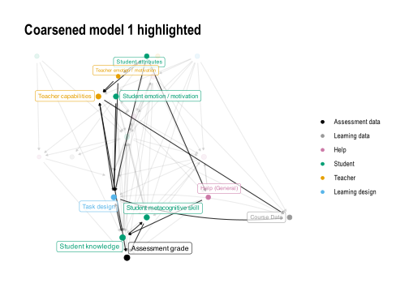
Code
p_coarse_show_and_save(2)
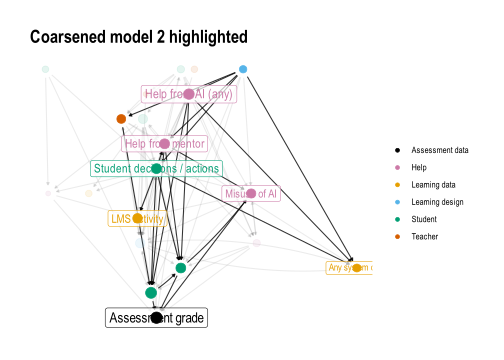
Code
p_coarse_show_and_save(3)
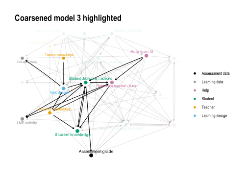
Code
p_coarse_show_and_save(4)
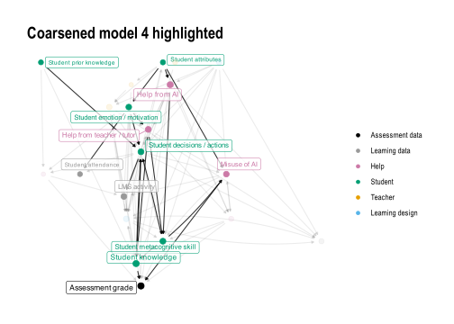
Code
p_coarse_show_and_save(5)
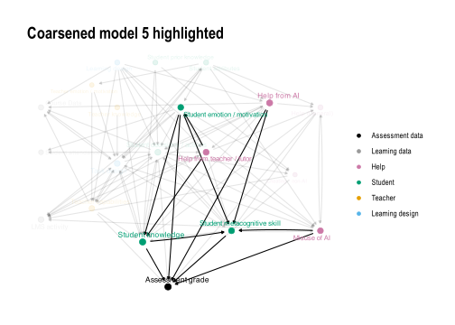
Code
p_coarse_show_and_save(6)
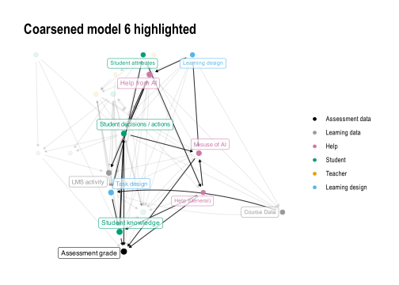
Code
p_coarse_show_and_save(7)
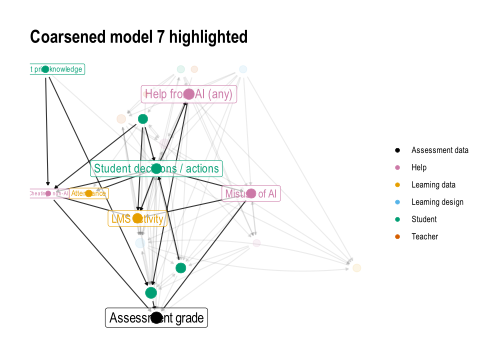
Code
p_coarse_show_and_save(8)
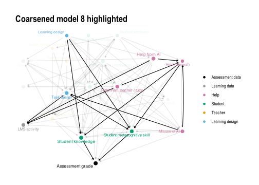
Visualising coarsened graphs
Note the appearance of feedback loops - these are between S.Cp and S.Kn, but also S.Cp and H.AI.evil. These metacognitive skills are clearly seen as important feedback processes in this system.
Weighting by num of models instead This one uses only nodes that are in the majority of models, then coarsens the graph, then aggregates edges based on the number of models that they appear in. The edges must also appear in at least 2 models
Code
node_list_majority_of_models <- all_nodes |>count(name) |>filter(n >=4) |>pull(name)coarse_filtered_graph_ng_filled <-tbl_graph( # only nodes that are in most models (4 or more)nodes = all_nodes |>filter(name %in% node_list_majority_of_models) |>mutate( # but then coarsen into node groupsnode_group =code_node_group(name),node_type =code_node_type(name)) |>count(node_group, node_type) |>rename(node_w = n),edges = all_edges |># Only edges between node groups...mutate(across(from:to, code_node_group)) |>distinct(Model, from, to) |>count(from, to) |># filter(n > 1) |> # ...that occur in at least two modelsfilter(from %in%code_node_group(node_list_majority_of_models)) |>filter(to %in%code_node_group(node_list_majority_of_models)) |>rename(edge_w = n)) |>activate("edges") |>switches_exist(from, to) |>activate("nodes") |>inner_join(node_group_nice_name)
All edges between node groups from the majority nodes
How often do causal paths point in the same direction?
Note on Model 8. This is a structurally different system, in which any misuse of AI effects are deliberately mediated through the task design. This is a case where the causal structure should be different to the others - we are describing a different system due to deliberate design choices.
We examine the 188 edges from 1969 possible edges across the 8 models, and in addition include the ancestor - descendant pairs. From this we define a few events:
\(E_{ij}\in G_k\) for and edge belonging to a model
\(P(E_{ij} \in \mathbf{E}_{G_k} |V_i,V_j \in \mathbf{V}_{G_k} , E_{ij} \in \mathcal{E} )\) - the probability of inclusion of an edge in models it could be included in, given it appears in at least one model. This is 0.8995314
\(P(E_{ij} \in \mathbf{E}_{G_k} \forall G_k |V_i,V_j \in \mathbf{V}_{G_k} , E_{ij} \in \mathcal{E} )\) - the probability of universal inclusion of an edge in all models it could be included in, given it appears in at least one model. This is 0.8085106
\(P(V_j \in \mathrm{an}_{G_k}(V_i) | V_i,V_j \in \mathbf{V}_{G_k} , E_{ij} \in \mathcal{E} )\), or \(P(V_i \rightsquigarrow_{G_k} V_j | V_i,V_j \in \mathbf{V}_{G_k} , E_{ij} \in \mathcal{E} )\) - the probability of universal inclusion of a descendant in all models it could be included in, given the edge appears in at least one model. This is 0.9490248.
\(P(V_j \in \mathrm{an}_{G_k}(V_i) \forall G_k | V_i,V_j \in \mathbf{V}_{G_k} , E_{ij} \in \mathcal{E} )\) - the probability of universal inclusion of a descendant in all models it could be included in, given the edge appears in at least one model. This is 0.8989362. Could maybe use the squiggle notation here of mediated path?
We now perform the same analysis, but for the node-group cluster DAGs. It is worth noting that these numbers are lower due to the node clustering - it is much more likely that common nodes are found across graphs.
\(E_{[i][j]}\in \mathbf{E}_{{G_k^C}}=\mathbf{E}_{\varphi G_{k}}\) for and edge belonging to a clluster model
\(P(E_{[i][j]} \in \mathbf{E}_{\varphi G_k} |V_{[i]},V_{[j]} \in \mathbf{V}_{\varphi G_k} , E_{[i][j]} \in \mathcal{E}_\varphi )\) - the probability of inclusion of an edge in models it could be included in, given it appears in at least one model. This is 0.5591407
\(P(V_{[j]} \in \mathrm{an}_{\varphi G_k}(V_{[i]}) | V_{[i]},V_{[j]} \in \mathbf{V}_{\varphi G_k} , E_{[i][j]} \in \mathcal{E}_{\varphi} )\), or \(P(V_{[i]} \rightsquigarrow_{\varphi G_k} V_{[j]} | V_{[i]},V_{[j]} \in \mathbf{V}_{\varphi G_{k}} , E_{[i][j]} \in \mathcal{E}_{\varphi} )\) - the probability of universal inclusion of a descendant in all models it could be included in, given the edge appears in at least one model. This is 0.9490248.
Causal \(\mathcal{L}\)-consistancy
THIS BIT NEEDS TO BE RE-WRITTEN FOR THE NEW CODE
L1 (association) and L2 (intervention / do) levels on the causal hierarchy can be examined at a graph level through:
\(\mathcal{L}_1\) Examining all conditional probability implications. If these are preserved between graphs then the two graphs are \(\mathcal{L}_1\)-consistent. ? An equivalent may be having similar / same CPDAGs - complete partial DAGs - which are the Markov equivalent class of DAGs. These induce the same conditional independencies (Thm 1.2.4 in Pearl 2009). These are the skeleton + all v-structures (colliders) arrowed in.
\(\mathcal{L}_2\) Examining all ‘do’ operator implications. If these are preserved between graphs then the two graphs are \(\mathcal{L}_2\)-consistent. Or - use the Structural Intervention Distance (Peters & Buhlmann, 2015)
\(\mathcal{L}_3\) Is not explored - this would probably require a SCM, not just the DAG.
Causal Consistency when Clustering
L1 consistency when clustering
This computes two metrics, the loss ratio of conditional independence relationships (ci_loss) and the rate of introduction of spurious ancestors when coarsening. CI loss indicates how often a conditional independence relationship in the fine graph did not have its analogue in the coarsened graph. Spurious ancestors indicates the rate at which merged nodes introduced new ancestors in the cluster DAG - violating L1 consistency (CITE - Annan???)
clustering_L1_consistency |> knitr::kable(caption ="L1-consistency metrics when coarsening GCMs",digits =4)
L1-consistency metrics when coarsening GCMs
Model
ci_loss
spurious_ancestors
M1
0.0000
0.0000
M2
0.0000
0.0000
M3
0.0012
0.0000
M4
0.0294
0.0303
M5
0.0000
0.0000
M6
0.0344
0.0545
M7
0.0025
0.0000
M8
0.0045
0.0000
L2 consistency when clustering
This computes a single error metric - the % of lost identifiable pairs when coarsening. So this is where the \(P(Y|do(X))\) is identifiable in the fine graph but \(P(\varphi(Y)|do(\varphi(X)))\) is not identifiable in the coarsened cluster graph.
clustering_L2_consistency |> knitr::kable(caption ="L2-consistency metrics when coarsening GCMs",digits =4)
L2-consistency metrics when coarsening GCMs
Model
ErrLostId
M1
0.0000
M2
0.0000
M3
0.0152
M4
0.0091
M5
0.0000
M6
0.0244
M7
0.0000
M8
0.0000
Causal consistency between models
Computing L1, L2 distances between models
Code
compute_dist_matrix <-function( model_list, # list of models .df, # function that computes distance between two modelssymmetric =FALSE,impute_undefined =FALSE) { n <-length(model_list) nm <-names(model_list) D <-matrix(0, n, n, dimnames =list(nm, nm))if (symmetric) {# fill upper triangle, mirror, zero diagonalfor (i inseq_len(n -1)) {for (j in (i +1):n) { d <-.df(model_list[[i]], model_list[[j]]) D[i, j] <- d D[j, i] <- d } } Dsym <- D } else {for (i inseq_len(n)) {for (j inseq_len(n)) {if (i != j) { D[i, j] <-.df( model_list[[i]], model_list[[j]]) } } } Dsym <- (D +t(D)) /2 }if (impute_undefined) {# First fill Dsym on mirror fill <-is.nan(Dsym) &!is.nan(t(Dsym)) Dsym[fill] <-t(Dsym)[fill]if (any(is.nan(D))) {message("Imputing missing values") fit <- softImpute::softImpute(D, rank.max =4, lambda =0) D <-complete(D, fit) }if (any(is.nan())) fitSym <- softImpute::softImpute(Dsym, rank.max =4, lambda =0) Dsym <-complete(Dsym, fit) } return(list(D = D, Dsym = Dsym))}
A note on clustering methods
A note on clustering: Some methods of hclust have underlying geometric assumptions (assume distances are Euclidean, which they are not), and these are ward.D, ward.D2, centroid (UPGMC) and median (WPGMC). Of the remainder average and complete are the best candidates. There is another challenge when using these - the distance matrix must be symmetric and in the case of the L2 distances it is not. So a decision also needs to be made about how to do this along with the algorithm for the hierarchical clustering.
average (UPGMA) clustering method uses the mean pairwise distance between clusters, and the default for a non-Euclidean distance matrix. It is common when using Jaccard / dissimilarity. This works naturally with a matrix symmetrisation process of taking the average of the cross diagonals.
complete is a stronger method that looks for clusters where every pair within it is consistant, no exceptions. This is a better ‘worst case’ scenario, and works more naturally with taking the maximum value of the cross-diagonals when forcing the distance matrix to be symmetric.
As such two methods of visualising the between model distances are used: average and worst-case.
It seems that models M1, M2 (and maybe M4) are close to each other (GC1), as well as M3, M6 and M7 (GC2) and M5 and M8 (GC3).
Code
# thought - merge on latent projection of shared nodes only?ng_counts <- all_node_groups_aggregated_metrics |>count(node_group)gcm_latent_projection_merge <-function(model_list, shared_nodes =NULL) {# merges the latent projection of a list of models# each model is projected onto the shared set of nodes, # with the other nodes being treated as latentif (is.null(shared_nodes)) { shared_nodes <- model_list |>map( \(m)gcm_nodelist(m) |>pull(name) ) |>reduce(intersect) } merged_projections <- model_list |>map( \(m)gcm_latent_projection(m, latent_nodes =setdiff(gcm_nodelist(m) |>pull(name), shared_nodes)) |>activate(edges) |>mutate(edge_w =replace_na(edge_w, 1)) |>activate(nodes) ) |>reduce(gcm_merge)return(merged_projections)}tcdags_node_group |>gcm_latent_projection_merge(shared_nodes = ng_counts |>filter(n >3) |>pull(node_group)) |>activate(edges) |>filter(edge_w >2) |>g_plot_coarse()
Now we examine the feasibility of learning these models from data. A typical counter to going to the effort of eliciting these models from domain experts is that they can be learned from the data alone. However, we have seen here that much of the data is not present in the institutions ecosystem, with the nodes being deemed inherently latent (30.1%), potentially observable (46.3%), observable but not currently in the data (8.1%), or already measured and stored in the current data ecosystem (15.4%).
Examining at a coarser grained level by looking at the node group cluster graphs, we still see that a majority of node groups fall into difficult to measure categories:
We design this experiment as follows. We ask the question can a causal graph discovered from available data generate similar answers to the problem of assuring assessment? This translates to getting an unbiased estimate of Student Knowledge on Grade. As such 3 of the models are excluded, lacking sufficient adjustment sets (2 models) or having broken student knowledge into multiple nodes (1 model). For the “potentially observable” nodes a single descendant node is added, so that \(N \rightarrow N_P\), a proxy measurement node that is not the exact node measured but whose value depends only on the potentially observable node and some additional noise. The set of proxy nodes for the potentially observable (\(PO\)) nodes we denote (\(\hat{PO}\)). Each of the 5 remaining GCMs, with their additional proxy measurement nodes, is used to generate a synthetic data set. We assuming each node has an equal linear effect on its descendants (\(\beta=0.4\)), generated using simulateSEM of the dagitty package in R. This treats all variables as continuous with mean 0 and variance 1.
Code
sim_signal_strength <-list("idyllic"=0.9, "typical"=0.4, "noisy"=0.1)tibble(Scenario =names(sim_signal_strength),Beta =as.numeric(sim_signal_strength)) |>mutate(`Variance due to each parent node`= Beta^2/ (1+ Beta^2) ) |> knitr::kable(digits =3)
Scenario
Beta
Variance due to each parent node
idyllic
0.9
0.448
typical
0.4
0.138
noisy
0.1
0.010
We then apply a structure learning algorithm to each models simulated data in three phases: learning from the currently measured data only (only DW nodes), learning from all observable nodes (DW and O) nodes, and finally learning from all potentially available data (DW, O and \(\hat{PO}\)). This represents increasing levels of resourcing applied to learning the underlying causal structure, given the model.
Note we are working under a local assumption that each model is the ‘ground truth’, but fully acknowledge that we do not know for this system what the true model is. However, if the structure learning claims of application to discover latent nodes are to be believed (CITE) then we should see some reasonable convergence towards each locally true model.
Code
# maybe use dagitty::simulateSEM() or dagitty::simulateLogistic()# dagitty suggests using lavaan instead for SEM# should add layout!!# use same x, y from main graphm_build_node_group_model_with_proxy_nodes <-function(m ="M1", x_p_nudge =0, y_p_nudge =-2) { model <- m nodes_in_graphs <- all_node_groups_aggregated_metrics |>mutate(measurability =case_when(# Simplifying for sim node_group =="S.Kn"~"O", # For simming onlystr_detect(measurability_node_group, "atent") ~"L",str_detect(measurability_node_group, "Potent") ~"PO",TRUE~"O", )) |>mutate(name = node_group) |>inner_join(merged_coarse_layout |>select(name, x, y),by ="name") |>filter(Model ==toupper(m)) |>select(name, x, y, node_group, node_type, measurability) proxy_nodes <- nodes_in_graphs|>filter(measurability =="PO") |>select(name, node_type, x, y) |>mutate(name =str_c(name, "_p"),# Need to place proxy nodes close - might cause issuesx = x + x_p_nudge,y = y + y_p_nudge ) |>mutate(node_group ="Proxy") |>mutate(measurability ="O") # the assumption for the proxy nodes <- nodes_in_graphs |>bind_rows( # adding proxy nodes for PO nodes proxy_nodes ) |>mutate(measurability =factor( measurability, levels =c("L", "PO", "O"))) edges <- tcdags_node_group[[m]] |>gcm_edgelist() |>bind_rows(tibble(from = nodes |>filter(measurability =="PO") |>pull(name)) |>mutate(to =str_c(from, "_p")) ) new_tidydag <- tidygraph::tbl_graph(nodes = nodes, edges = edges, directed =TRUE ) new_dag <-dagitty_from_edge_df(edges)# setting coordinates of dagitty object - needs to be a named list node_names <- nodes$name node_coord_list <-list(x = nodes$x, y = nodes$y)names(node_coord_list$x) <- node_namesnames(node_coord_list$y) <- node_namescoordinates(new_dag) <- node_coord_list node_list_o <- nodes |>filter(measurability =="O") |>filter(!str_detect(name, "_p")) |>pull(name) node_list_opo <- nodes |>filter(measurability %in%c("DW", "O")) |>pull(name)return(list(dag = new_dag, # new dag in dagitty formattdag = new_tidydag, # new dag as tidydagnode_list_o = node_list_o, # list of observable nodes (excluding proxies)node_list_opo = node_list_opo # list of all non-latent nodes ))}simSEM <-partial(simulateSEM, eps =1, standardized = F, N =1000)# simSEM <- partial(simulateLogistic, eps = 1, N = 1000)bn_fit_node_group_model_list <-function( m_proxy_list, Beta =0.4,blacklist =tibble(from ="Grade", to ="S.Kn")) {# getting simulated data, and subsets d.sim.sem <-simSEM(m_proxy_list$dag, b.default = Beta) d.o <-as.data.frame(d.sim.sem[,m_proxy_list$node_list_o]) d.opo <-as.data.frame(d.sim.sem[,m_proxy_list$node_list_opo])# fitting BNets bn.full = bnlearn::bn.fit(bnlearn::hc(d.sim.sem,blacklist = blacklist), d.sim.sem) bn.o = bnlearn::bn.fit(bnlearn::hc(d.o,blacklist = blacklist), d.o) bn.opo = bnlearn::bn.fit(bnlearn::hc(d.opo,blacklist = blacklist), d.opo)return( # returns a named list of simmed data and modelslist(# The full data setd.full = d.sim.sem,bn.full = bn.full,# Only observable nodesd.o = d.o,bn.o = bn.o,# Including Potentially Observable (PO), so ALL non-latent nodesd.opo = d.opo,bn.opo = bn.opo ))}# bn_to_dagitty <- function(bn) {# edges <- bnlearn::arcs(bn) |> # as_tibble() |> # mutate(edge_str = str_c(from, " -> ", to))# # dagitty(str_c(# "dag{",# str_c(edges$edge_str, collapse = "; "),# "}"# ))# }bn_to_dagitty <-function(bn) { edges <- bnlearn::arcs(bn) |>as_tibble() all_nodes <- bnlearn::nodes(bn) edge_str <-if (nrow(edges) >0)str_c(edges$from, " -> ", edges$to, collapse ="; ") else""dagitty(str_c("dag{ ",str_c(all_nodes, collapse ="; "),if (nchar(edge_str)) str_c("; ", edge_str) else""," }"))}# Thinking of a simple dag X -> Y, we have # Var(Y) = b^2 * Var(X) + Var(eps) -- eps is the noise, and here it is set to 1 by default# then Var(Y) = b^2 + 1# Since the R^2 is the ratio of the variance explained by X:# R^2 = Var(explained) / Var(total)# R^2 = b^2 / (b^2 + 1)dagitty_to_bn <-function(dag) { edges <- dagitty::edges(dag) |>as_tibble() |>filter(e =="->") |># directed edges only, excludes bidirectedselect(v, w) |>rename(from = v, to = w) nodes <-unique(c(edges$from, edges$to))# Build empty network then set arcs net <- bnlearn::empty.graph(nodes) bnlearn::arcs(net) <-as.matrix(edges) net}causal_estimate_over_all_adj_sets <-function( dag, data, latent_nodes =NULL,exposure ="S.Kn", outcome ="Grade",x1_val =1, x0_val =0) {# This estimates P(Grade|S.Kn, Adjustment Set) over all adjustment sets# This will give a range of that the model suggests is the true effect adj_sets <-adjustmentSets(dag, exposure = exposure, outcome = outcome,type ="all")if (!is.null(latent_nodes)) {# remove any with latent nodes adj_sets <-keep(adj_sets, \(x) !any(x %in% latent_nodes)) }# Throw error if none! estimate_per_set <-map(adj_sets, function(adj_set) {if (length(adj_set) ==0) {message("No adjustment sets found") formula_str <-str_c(outcome, " ~ ", exposure) } else { formula_str <-str_c(outcome, " ~ ", exposure, " + ",str_c(adj_set, collapse =" + ")) }if (class(data[[1]]) =="factor") { fit <-glm(as.formula(formula_str), data = data, family = binomial) x1_data <- data |>mutate({{exposure}} :=factor(x1_val, levels =c(-1,1))) x0_data <- data |>mutate({{exposure}} :=factor(x0_val, levels =c(-1,1))) } else { fit <-lm(as.formula(formula_str), data = data) x1_data <- data |>mutate({{exposure}} := x1_val) x0_data <- data |>mutate({{exposure}} := x0_val) }# Simulating for potential outcomes y1_x1 <-predict(fit,newdata = x1_data,se.fit =TRUE) y1_x0 <-predict(fit,newdata = x0_data,se.fit =TRUE) preds.fit <- y1_x1$fit - y1_x0$fit se1 <-sqrt(mean(y1_x1$se.fit^2)) se0 <-sqrt(mean(y1_x0$se.fit^2)) se <-max(se1, se0)list(y1_x0 = y1_x0,y1_x1 = y1_x1,mean =mean(preds.fit),se = se ) } ) estimates <-map_dbl(estimate_per_set, "mean") std_errors <-map_dbl(estimate_per_set, "se")return(list(adjustment_set = adj_sets,estimate = estimates,std_error = std_errors))}generate_node_group_causal_estimate_comparisons <-function(Model ="M1",Beta =0.4, # strength of signal along paths# might need to change for different models depending on present nodesexposure ="S.Kn", outcome ="Grade",x1_val =1, x0_val =0, # should be 1 and 0 for continuous# for placiing proxy nodesx_p_nudge =0, y_p_nudge =-2) { ground_truth_dag <- tcdags_node_group[[Model]] |>tidy_graph_to_dag() model_list <-m_build_node_group_model_with_proxy_nodes(m = Model, x_p_nudge = x_p_nudge, y_p_nudge = y_p_nudge) bn_list <-bn_fit_node_group_model_list(model_list, Beta = Beta)# Ground truth uses full simmed data est <-partial(causal_estimate_over_all_adj_sets,exposure = exposure, outcome = outcome,x1_val = x1_val, x0_val = x0_val) ground_truth <-est(dag = ground_truth_dag, data = bn_list$d.full) expert_dag <-est(dag = ground_truth_dag, data = bn_list$d.full,latent_nodes = all_node_groups_aggregated_metrics |>filter(Model == Model, str_detect(measurability_node_group, "atent")) |>pull(node_group)) can_estimate_o <- (exposure %in% model_list$node_list_o) & (outcome %in% model_list$node_list_o) can_estimate_opo <- (exposure %in% model_list$node_list_opo) & (outcome %in% model_list$node_list_opo)if (can_estimate_o) { est.o <-est( dag =bn_to_dagitty(bn_list$bn.o) , data = bn_list$d.o) } else { est.o <-list("adjustment_set"=NA, "estimate"=NA)message("Nodes not found in Observable node list") }if (can_estimate_opo) { est.opo <-est( dag =bn_to_dagitty(bn_list$bn.opo) , data = bn_list$d.opo) } else { est.opo <-list("adjustment_set"=NA, "estimate"=NA)message("Nodes not found in Potentially Observable node list") } estimates <-tibble(Model = Model,DAG =c("Ground Truth", "Expert DAG","Observable", "Potentially Observable") |>factor(levels =c("Ground Truth", "Expert DAG", "Observable", "Potentially Observable")),exposure = exposure, outcome = outcome,adjustment_sets =list( ground_truth$adjustment_set, expert_dag$adjustment_set, est.o$adjustment_set, est.opo$adjustment_set ),estimate_mean =c(mean(ground_truth$estimate),mean(expert_dag$estimate),mean(est.o$estimate),mean(est.opo$estimate) ),estimate_std_errors =c(mean(ground_truth$std_error),mean(expert_dag$std_error),mean(est.o$std_error),mean(est.opo$std_error) ),estimate_sd =c(sd(ground_truth$estimate),sd(expert_dag$estimate),sd(est.o$estimate),sd(est.opo$estimate) ) )return( # Monster list of everything we needlist(Model = Model,DAG = ground_truth_dag,augmented_DAGs = model_list,fitted_BN = bn_list,estimates = estimates ) )}
plot_bnlearn_coarse_comparison <-function(s_estimates) { p_orig <- s_estimates$DAG |>dag_to_tidy_graph() %N>%mutate(name =str_remove(name, "_p$")) |>gcm_cluster_graph(code_node_group) |>g_plot_coarse() p_opo <- s_estimates$fitted_BN$bn.opo |>bn_to_dagitty() |>dag_to_tidy_graph() %N>%mutate(name =str_remove(name, "_p$")) |>gcm_cluster_graph(code_node_group) |>g_plot_coarse()return(p_orig / p_opo )}plot_bnlearn_coarse_comparison(s_estimates = simulations_ng_cluster_models$M1) +ggtitle("Model 1: Actual coarsened DAG (top) vs coarsened learned DAG from observable nodes")
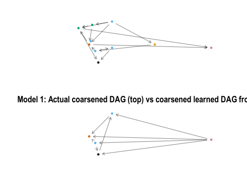
Code
plot_bnlearn_coarse_comparison(s_estimates = simulations_ng_cluster_models$M2) +ggtitle("Model 2: Actual coarsened DAG (top) vs coarsened learned DAG from observable nodes")
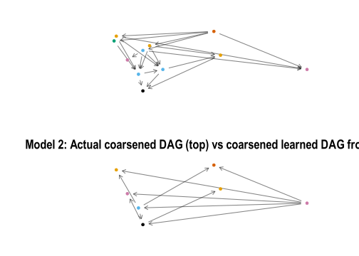
Code
plot_bnlearn_coarse_comparison(s_estimates = simulations_ng_cluster_models$M3) +ggtitle("Model 3: Actual coarsened DAG (top) vs coarsened learned DAG from observable nodes")
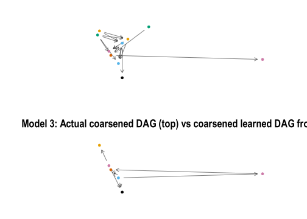
Code
plot_bnlearn_coarse_comparison(s_estimates = simulations_ng_cluster_models$M4) +ggtitle("Model 4: Actual coarsened DAG (top) vs coarsened learned DAG from observable nodes")
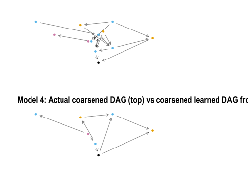
Code
plot_bnlearn_coarse_comparison(s_estimates = simulations_ng_cluster_models$M5) +ggtitle("Model 5: Actual coarsened DAG (top) vs coarsened learned DAG from observable nodes")
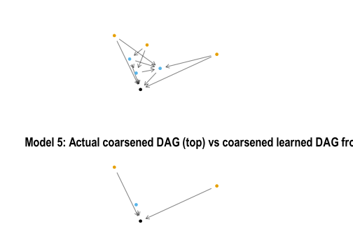
Code
plot_bnlearn_coarse_comparison(s_estimates = simulations_ng_cluster_models$M6) +ggtitle("Model 6: Actual coarsened DAG (top) vs coarsened learned DAG from observable nodes")
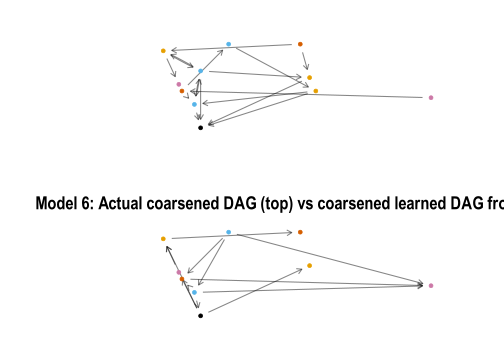
Code
plot_bnlearn_coarse_comparison(s_estimates = simulations_ng_cluster_models$M7) +ggtitle("Model 7: Actual coarsened DAG (top) vs coarsened learned DAG from observable nodes")
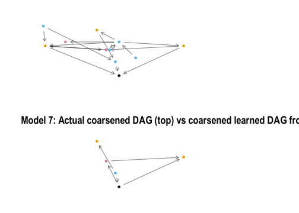
Code
plot_bnlearn_coarse_comparison(s_estimates = simulations_ng_cluster_models$M8) +ggtitle("Model 8: Actual coarsened DAG (top) vs coarsened learned DAG from observable nodes")
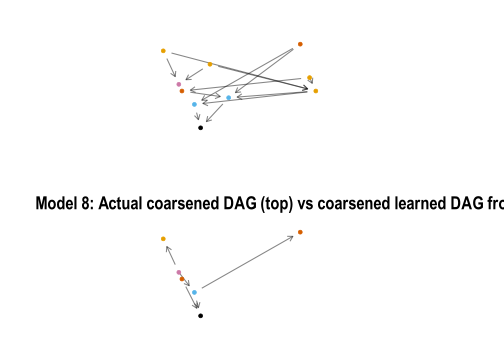
Distances between the simulations and the originals
### L2 consistency between models??# Could base on the Jenson-Shannon distance between distributions - https://arxiv.org/pdf/2305.04357 - see definition 4.